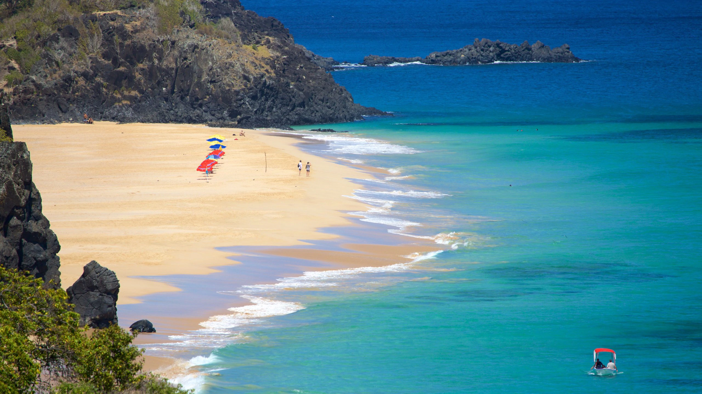
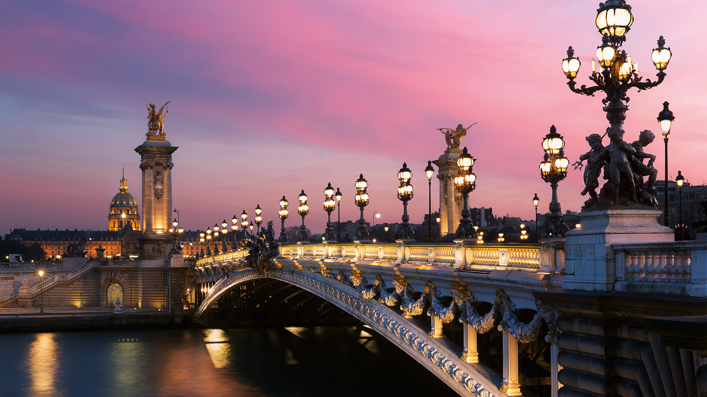
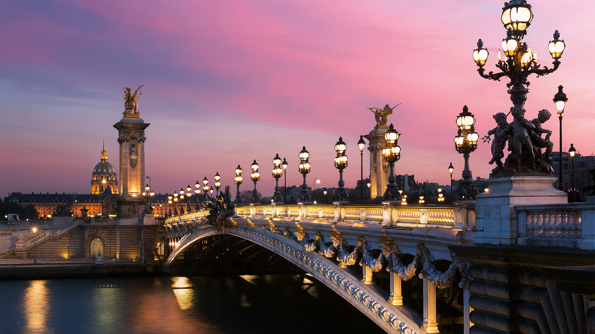

Fernando de Noronha, Brasil
Um paraíso brasileiro com praias deslumbrantes como a Baía do Sancho e Baía dos Porcos.
 

Se você ama viajar, sonha com novos destinos ou simplesmente adora descobrir culturas, sabores e paisagens diferentes, este é o seu lugar!
Aqui no Explorando o Mundo, cada post é um convite para embarcar em uma nova aventura — seja pelas ruas encantadoras da Europa, praias paradisíacas do Brasil, trilhas escondidas ou cidades vibrantes ao redor do planeta.
Nosso objetivo é inspirar, informar e ajudar você a planejar viagens incríveis com dicas reais, roteiros personalizados, curiosidades culturais e muitas fotos de tirar o fôlego. Arrume as malas (nem que seja só na imaginação) e venha explorar o mundo com a gente!
Um paraíso brasileiro com praias deslumbrantes como a Baía do Sancho e Baía dos Porcos.
Um lugar onde espiritualidade, história e beleza se encontram em perfeita harmonia.
Conhecida por suas fontes termais (onsens), oferece uma experiência relaxante e cultural única.